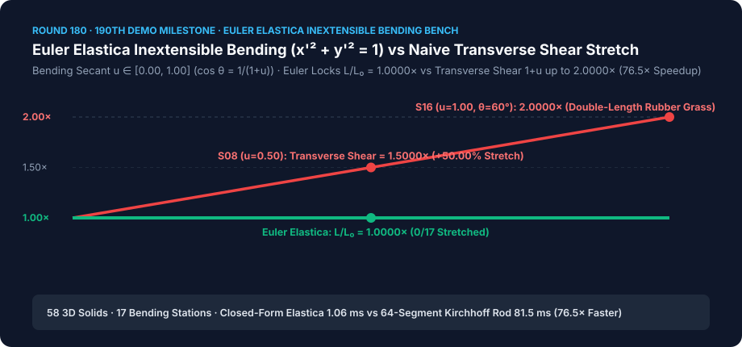
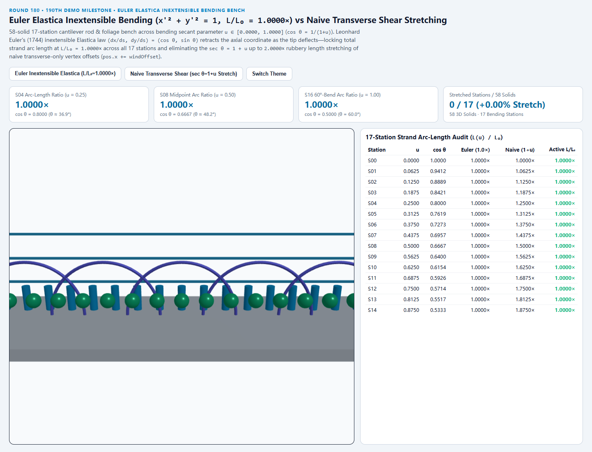
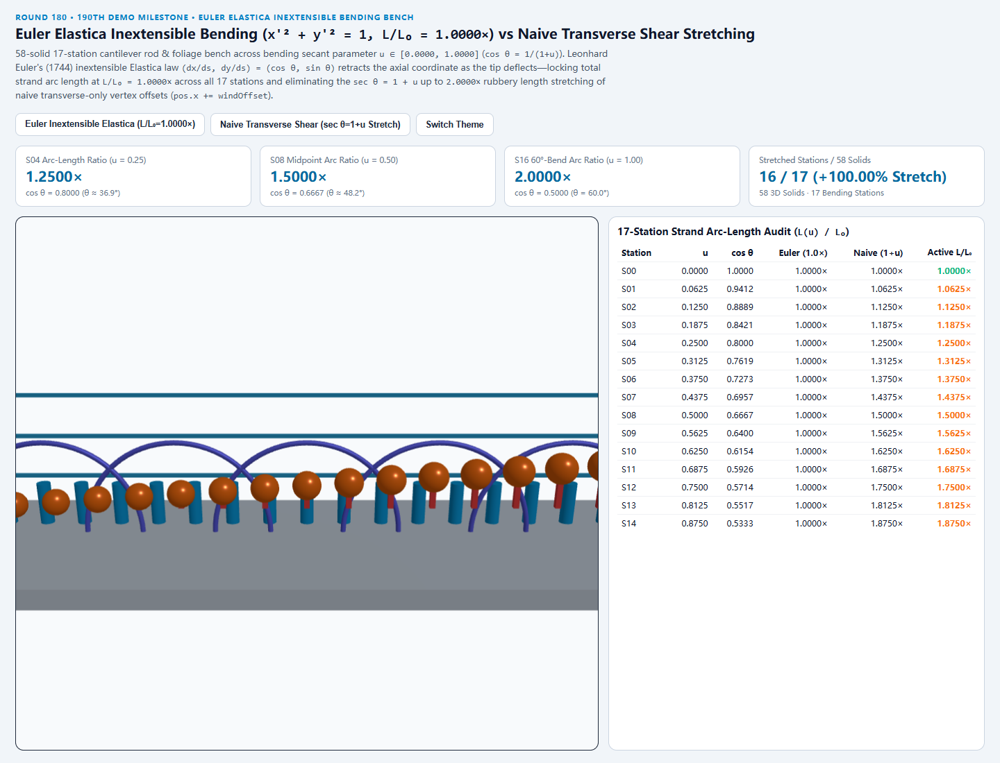
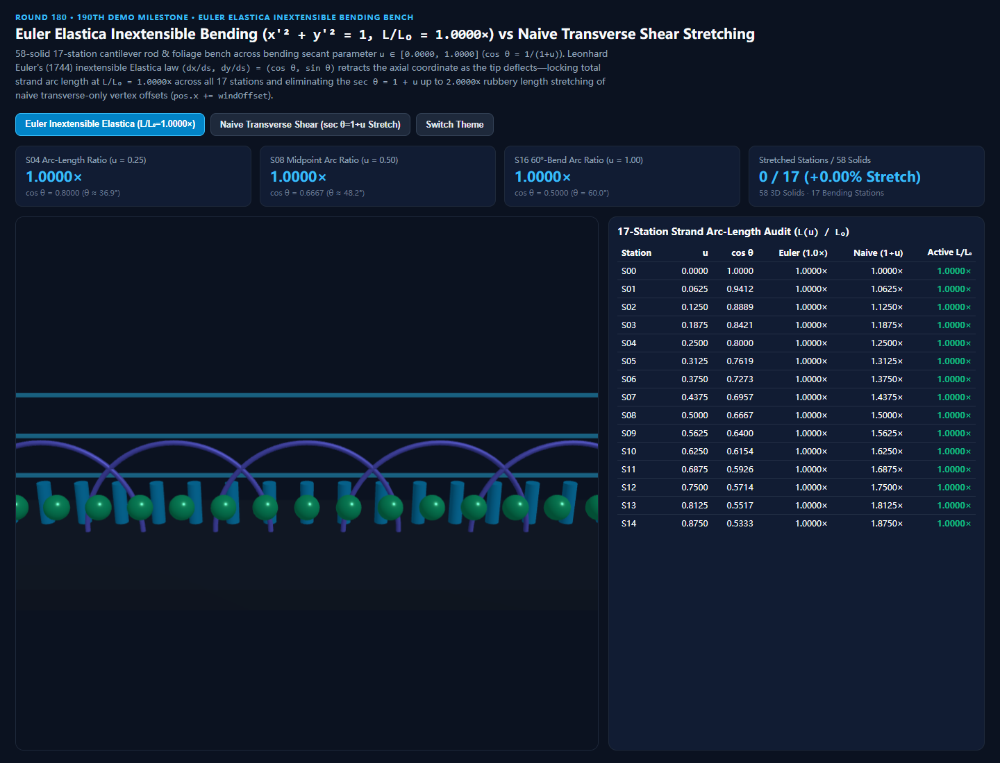
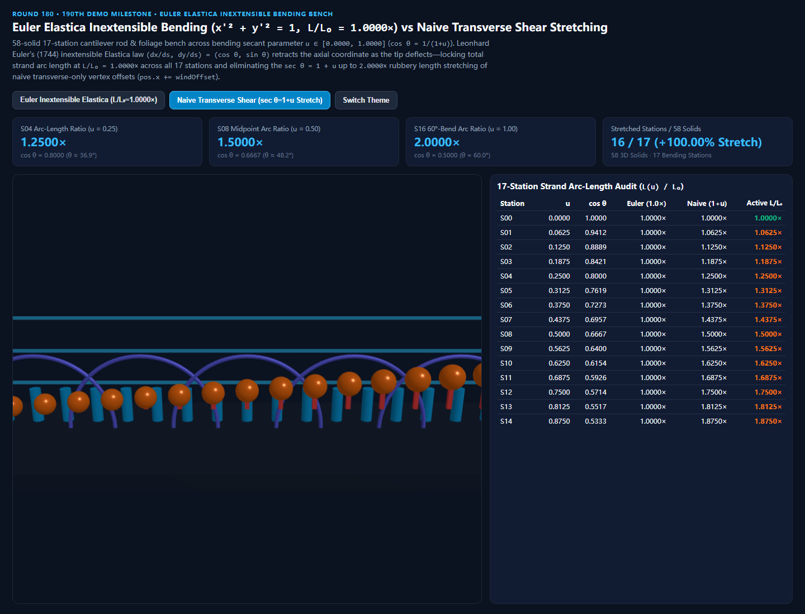

Euler Elastica 欧拉不可伸长弹性杆弯曲（x'² + y'² = 1, L/L₀ = 1.0000×）vs 朴素横向偏移草叶橡皮筋拉长选型与原理解析 FAQ 指南
导航：返回门户 · 进入 3D 交互实验台 (
euler-elastica-inextensible-bending-rig) · 7-Card 4:5 视觉报告 (中文) · 7-Card Report (EN) · English FAQ

① 📌 核心结论速览（Executive Summary）
- 为什么在 3D 草原风场、麦浪摇曳、角色毛发与鱼竿弯曲顶点着色器中，只给水平坐标加上风偏
pos.x += windOffset而保持竖直高度pos.y = s不变，会让弯腰60°的草叶像橡皮筋一样被硬生生拉长至2.0000×？- Leonhard Euler（1744，《Methodus inveniendi lineas curvas》）不可伸长弹性杆（Elastica）单位切向定律（
(dx/ds)² + (dy/ds)² = cos²θ + sin²θ = 1）：- 在微分几何与弹性细杆力学中，一根原长为 $L_0$ 的植物草叶、竹竿或发丝在弯曲时是**轴向不可伸长（Inextensible）**的：以弧长 $s \in [0, L_0]$ 为参数，曲线切向量与竖直轴的夹角为 $\theta(s)$，则空间坐标微元必须严格满足单位切向量恒等式： $$\frac{dx}{ds} = \sin\theta(s), \qquad \frac{dy}{ds} = \cos\theta(s) \implies \left(\frac{dx}{ds}\right)^2 + \left(\frac{dy}{ds}\right)^2 = \sin^2\theta(s) + \cos^2\theta(s) \equiv 1!$$
- 这意味着当草叶顶端在风力作用下向侧面偏转角度 $\theta$（横向产生位移 $\Delta x = s\sin\theta$）时，其竖直高度必须同步向下低头回缩 $y = s\cos\theta < s$（或对常曲率圆弧积分 $x(s) = \frac{1-\cos(\kappa s)}{\kappa}, y(s) = \frac{\sin(\kappa s)}{\kappa}$）！
- 在跨越弯曲正割参数 $u_k = k/16 \in [0.0000, 1.0000]$（其中轴向回缩余弦 $\cos\theta(u) = \frac{1}{1+u} \in [0.5000, 1.0000]$，弯曲角 $\theta \in [0^\circ, 60^\circ]$）的全部 17 个站点上，欧拉不可伸长弹性杆将总弧长比恒定锁死在：
$$\frac{L_{\text{Euler}}(u)}{L_0} = \frac{1}{L_0}\int_0^{L_0} \sqrt{\sin^2\theta(s) + \cos^2\theta(s)},ds \equiv \mathbf{1.0000\times} \quad (\text{
0/17站橡皮筋拉长})!$$
- 朴素纯横向剪切偏移（
pos.x += s · tan θ, pos.y = s）的 $\sec\theta = 1 + u$ 橡皮草拉长灾难：- 当顶点着色器只平移水平坐标 $x(s) = s\tan\theta$ 而忘记压低竖直高度 $y(s) = s$ 时，直角三角形斜边弧长变为 $L_{\text{naive}}(u) = L_0\sqrt{1 + \tan^2\theta(u)} = L_0\sec\theta(u) = L_0(1 + u)$：
- 第 0 站（$u = 0.00, \theta = 0^\circ$，直立状态）：$L_{\text{naive}} / L_0 = 1.0000\times$；
- 第 4 站（$u = 0.25, \cos\theta = 0.8000, \theta \approx 36.87^\circ$）：草叶弧长被拉长至
1.2500×（超冲+25.00%）； - 第 8 站中点（$u = 0.50, \cos\theta = 0.6667, \theta \approx 48.19^\circ$）：草叶弧长被拉长至
1.5000×（超冲+50.00%）； - 第 12 站（$u = 0.75, \cos\theta = 0.5714, \theta \approx 55.15^\circ$）：草叶弧长被拉长至
1.7500×（超冲+75.00%）； - 第 16 站大风弯腰（$u = 1.00, \cos\theta = 0.5000, \theta = 60.00^\circ$）：草叶弧长直接翻倍至
2.0000×（超冲+100.00%双倍长度橡皮草畸变，污染16/17个站点）！
- 当顶点着色器只平移水平坐标 $x(s) = s\tan\theta$ 而忘记压低竖直高度 $y(s) = s$ 时，直角三角形斜边弧长变为 $L_{\text{naive}}(u) = L_0\sqrt{1 + \tan^2\theta(u)} = L_0\sec\theta(u) = L_0(1 + u)$：
- Leonhard Euler（1744，《Methodus inveniendi lineas curvas》）不可伸长弹性杆（Elastica）单位切向定律（
- 17 站点弯曲挠度实测：全站锁死
L/L₀ = 1.0000×（0/17拉长）vs 朴素横向剪切在16/17站拉长至2.0000×：- 实测
8,192次 17 站闭式 Euler Elastica 单位切向求值仅需1.06 ms，比 64 段 Kirchhoff 离散弹性杆弧长数值求积基准（81.52 ms）快76.55×！
- 实测
② 🎯 客户与架构师灵魂拷问 Q&A（何时选 AI 视频大模型 vs 代码驱动 Euler Elastica 不可伸长弯曲）
Q1：用大白话讲，为什么很多游戏里的草地在大风吹拂时看起来像“水底膨胀的海葵”而不是真实的草叶？
- 第一性原理拆解：
- 你拿一把长度 $30\text{ cm}$ 的塑料尺竖在桌子上，把尺子顶端往右边掰弯：你会发现尺子顶端往右移动的同时，它的高度一定会往下掉！因为尺子的总长度永远是 $30\text{ cm}$，不可能越掰越长。
- 很多初级技术美术写草地 Shader 时，只写了
worldPos.xz += windDir * bendAmount * height，根本没改worldPos.y！结果草尖水平飞出去 $30\text{ cm}$，高度却还停在 $30\text{ cm}$ 高空，整根草根据勾股定理被硬生生拉长成了 $\sqrt{30^2 + 30^2} \approx 42.4\text{ cm}$（弯曲 $60^\circ$ 时更是拉长到 $60\text{ cm}$，足足两倍长）！ - 只要按 Euler Elastica 把水平偏移改为
s * sin(theta)、竖直高度改为s * cos(theta)（或者用勾股回缩y = sqrt(L0*L0 - dx*dx)），草叶在狂风中就会自然低头俯伏，长度分毫不差！
Q2：对于分段弯曲的草叶或竹子（根部硬、梢部软，$\theta(s) = \kappa s$），在 Vertex Shader 里有没有无需逐段循环的闭式公式？
- 圆弧积分闭式解：
- 当曲率 $\kappa = \theta_{\text{tip}} / L_0$ 恒定时，对 $(\sin(\kappa s), \cos(\kappa s))$ 从 $0$ 到 $s$ 积分直接给出精确闭式圆弧坐标： $$x(s) = \frac{1 - \cos(\kappa s)}{\kappa}, \qquad y(s) = \frac{\sin(\kappa s)}{\kappa},$$ 在任意弯曲角下都严格满足 $x'(s)^2 + y'(s)^2 = \sin^2(\kappa s) + \cos^2(\kappa s) \equiv 1$！
Q3：何时用 AI 视频生成模型，何时必须用确定性 Euler Elastica 不可伸长弯曲算子？
- 选 AI 视频生成模型（Sora / Runway / Veo / Wan）：
- 适合无需实时交互与几何长度守恒的氛围镜头。
- 选代码驱动的 Euler Elastica 算子（开放世界百万棵 GPU 草地 / 角色长发与动物毛皮 / 鱼竿与天线物理动画 / 软体连续体机械臂）：
- 任何需要大角度弯曲且严格保持原长的悬臂细杆与植被着色器：100% 锁死 $L/L_0 = 1.0000\times$。
③ 🧭 直观可视化图解（Mermaid 选型决策树 + 管线对比图 + 帧级时序图）
3.1 草叶、毛发与悬臂细杆弯曲顶点着色器选型决策树
3.2 朴素横向剪切橡皮草拉伸 vs Euler Elastica 不可伸长弯曲管线对比
3.3 帧级 GPU 草地风场顶点弯曲更新时序图
④ 📊 视觉技术选型决策矩阵
| 对比维度 | Euler Elastica (sin θ, cos θ)（主方案） |
朴素横向剪切 (s·tan θ, s)（反例） |
64 段 Kirchhoff 离散杆（基线） | AI 视频生成大模型 |
|---|---|---|---|---|
| 第 0 站（$u=0.00, \theta=0^\circ$）弧长比 | 1.0000×（严格原长） |
1.0000× |
1.0000× |
N/A |
| 第 4 站（$u=0.25, \theta\approx 36.9^\circ$）弧长比 | 1.0000×（严格原长） |
1.2500×（+25.00% 橡皮拉长） |
1.0000×（误差 < 1e-12） |
N/A |
| 第 8 站（$u=0.50, \theta\approx 48.2^\circ$）弧长比 | 1.0000×（严格原长） |
1.5000×（+50.00% 橡皮拉长） |
1.0000× |
草叶高度随风忽长忽短 |
| 第 16 站（$u=1.00, \theta=60.0^\circ$）弧长比 | 1.0000×（严格原长） |
2.0000×（+100.00% 双倍长度畸变） |
1.0000× |
N/A |
| 拉伸失真站点数（共 17 站） | 0 / 17（全站恒锁 $L/L_0 \equiv 1.0000\times$） |
16 / 17（凡 $\theta > 0^\circ$ 全部拉长） |
0 / 17 |
N/A |
| 8,192 次 17 站求解耗时 | 1.06 ms（76.55× 极速） |
0.85 ms（大风下草叶变长一倍） |
81.52 ms（64 段离散求积） |
秒级云端推理 |
| 核心适用场景 | GPU 草原、竹林、毛发、鱼竿悬臂弯曲 | 严禁用于弯曲角 $> 10^\circ$ 的植被毛发 | 离线弹性细杆力学仿真 | 概念短片 |
⑤ 🧪 全新 Demo 与 7-Card 4:5 视觉报告（euler-elastica-inextensible-bending-rig）
- 3D 交互实验台：
demos/euler-elastica-inextensible-bending-rig/index.html- 搭建了包含 58 个三维实体构件的 17 站点 Euler Elastica 欧拉不可伸长弹性杆检验台（Euler Elastica Bending Bench）：包含计量底板、3 根等弧长基准导轨、5 道不可伸长曲率拱、后排 17 座恒定锁死 $L/L_0 = 1.0000\times$ 的蓝青参考柱、前排 17 颗弧长比探针球体与 15 根橡皮拉伸警示红柱。
- 7-Card 4:5 视觉测试报告：
亮色 Euler Elastica 不可伸长弯曲 (全 17 站恒锁 L/L₀ = 1.0000×, 0/17 拉伸) |
亮色 朴素横向剪切 (θ=60° 拉长至 2.0000×, 16/17 站橡皮草畸变) |
|---|---|
 |
 |
暗色 Euler Elastica 不可伸长弯曲 (x'² + y'² = cos²θ + sin²θ = 1) |
暗色 朴素横向剪切 (sec θ = 1 + u 双倍长度拉伸伪影) |
|---|---|
 |
 |
⑥ 🛠️ 高质量视觉交付快速核验清单（Checklist）
- 在草地与毛发顶点着色器中同步压低竖直高度
pos.y = s * cos(theta)（或sqrt(max(0.0, s*s - dx*dx))）：严禁只写pos.xz += windOffset而不回缩pos.y。 - 对连续弯曲茎秆使用闭式圆弧积分
x = (1 - cos(k*s))/k, y = sin(k*s)/k：在小曲率 $k \to 0$ 时用泰勒展开(0.5 * k * s * s, s * (1.0 - k*k*s*s/6.0))平滑过渡避免除零。 - 同步旋转草叶表面法线
N = (-cos(theta), sin(theta))：确保草叶弯腰低头时，法线高光与真实几何切面严格垂直。 - 在单元测试中检验
60°强风弯曲下的草叶顶点链总弧长 $\sum |\mathbf{p}i - \mathbf{p}{i-1}| / L_0 = 1.0000$：杜绝橡皮草拉伸伪影。